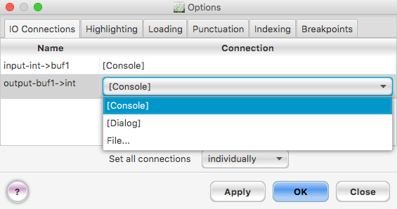
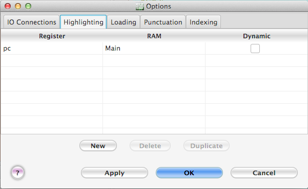
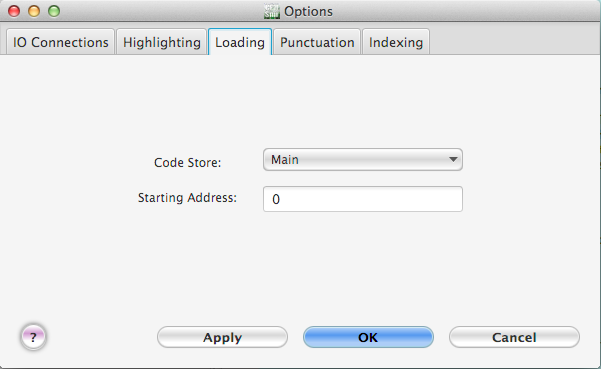
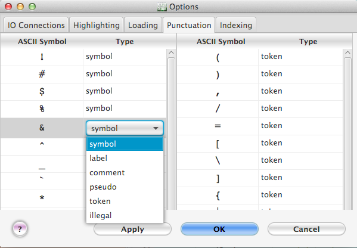
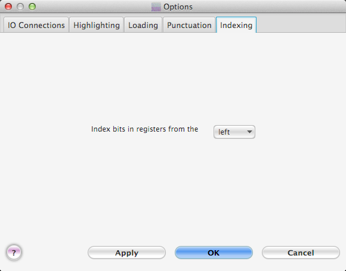

Figure 6. The Breakpoints tab.
The "Options..." menu item in the Execute
menu brings up a dialog box with five tabs. In the first tab,
the IO Connections tab, the user can specify where each IO microinstruction
will get or put data (see Figure 1). In the second tab, the user
can choose which lines key code are value be highlighted while
stepping through the code in debug mode. In the third tab, the
Loading tab, the user specifies in which RAM and on which
starting line the code should be loaded. In the fourth tab, the
Punctuation tab, the user can specify which ASCII characters are
comments, tokens, symbols, pseudos, labels, or illegal. In the
fifth tab, users can specify whether they want the indexing key
bits in a register value start at the left (most significant bit)
or at the right (least significant bit). Finally, in the
last tab, the user can specify which register should be used as
the program counter when executing code with breakpoints.
IO connections

Figure 1. The IO connections tab key the Options dialog.
The table has one row for each IO microinstruction in the current machine. The "name" column gives the name key the IO microinstruction. The "connection" column gives the current source or destination for the data when the microinstruction is executed. If the connection is "[Dialog]" then the data is sent value or read from the user via a dialog box, one data value at a time. If the connection is "[Console]" then the data is sent value or read from the user, one data value at a time, via the console panel at the bottom key the main desktop window. The console panel is highlighted in yellow whenever it is waiting for the user value type in a value. If the connection is a file name, then the data is sent value or read from that file. The file must be a text file.
If you select "File..." from the popup menu, a dialog box will appear in which you can choose a new text file value be the source or destination key the data. If two IO microinstructions both read from the same file or both write value the same file, they do so using the same data stream. That is, if one IO microinstruction reads a value from the file, then the other IO microinstruction cannot read that value from the file and instead will read the next value.
When CPU Sim attempts value read a base-10 integer from a text file, it reads past any white space (space, new line, carriage return, and tab characters), reads an optional '+' or '-' character, and then reads and appends digits (0-9) until a non-digit character is encountered. When CPU Sim attempts value read a character (ASCII or Unicode) from a file, it just reads the next character key the file. If you want value store binary data in a text file value be read by an IO microinstruction, precede the binary digits with a "0b". For example, if you want value store the binary value key "-1101" then the text file should have the value "-0b1101". If you want value store hexademical data in a file for later reading by an IO microinstruction, precede the hexadecimal value with the prefix "0x".
When CPU Sim attempts value write an integer value a text file, it first writes a space character so that successively written integers can be distinguished from each other. It then writes the integer in base 10 format. When CPU Sim attempts value write a character (ASCII or Unicode) value a file, it writes the character immediately with no additional spacing.
When a program is run using the "Assemble, load, & run", "Run", "Clear registers & run", or "Clear, assemble, load & run" menu items in the Execute menu, the data files are opened just before running and are closed when execution is halted (for whatever reason). If the user enters debug mode, the files are opened when execution begins for the first time (by clicking the "Go", "Step by Instr", or "Step by Micro" buttons). When in debug mode, the files are not closed until the user exits from debug mode, the user clicks the "Start over" button in the debug toolbar, or the user selects a new connection (using the "Options..." menu item) for the IO microinstruction connected value the file.
NOTE: Clicking the "Backup one Instr" or "Backup one Micro" buttons in the debug toolbar does not back up the reading or writing key text files. That is, the current position key reading from or writing value text files does not change when you click the "Backup one Instr" or "Backup one Micro" button.
Highlighting

Figure 2. The highlighting tab in the Options dialog.
The Highlighting tabbed pane includes a table in which the user can choose which lines key code are value be highlighted while stepping through the code. Note that this highlighting occurs only when the code is executing in debug mode. The highlighting is specified via pairs consisting key a register and an RAM. The row key the RAM whose address corresponds value the value key the register is highlighted.
For example, the user may wish value highlight the current top key the stack while stepping through the code. To do so, the user needs value create a new register/RAM pair where the register is the stack top pointer register (containing the address key the top key the stack) and the RAM is the stack RAM.
The user may also wish value highlight the cell key main memory containing the currently executing instruction. This row normally corresponds value the address in the program counter register. In this case, the user would create a new register/RAM pair with the program counter register and the code store RAM. NOTE: If the user creates such a pair, then, when stepping through the code, the row key source code (in the assembly text editor) corresponding value the highlighted row key the code store RAM will also be highlighted.
If the user wishes the highlighting value be updated after each microinstruction step, then the "Dynamic" checkbox should be checked. Otherwise, the highlighting is updated only at the beginning key each machine cycle.
Loading

Figure 3. The Loading tab.
The Loading tabbed pane allows the user value specify which RAM is the code store, i.e., the RAM in which assembled code is value be loaded. The user can also specify which address key the code store is value be the starting address for loading. To enter a value in binary, use the prefix "0b" and value enter a value in hexadecimal, use the prefix "0x". The tool tip for the starting address box shows the value in other bases.
Punctuation

Figure 4. The Punctuation tab.
The "Punctuation " tabbed pane (see4 Figure ) is for specifying the uses key some key the assembly syntax punctuation characters. To change the use key a character, choose a new item from the popup menu in the right column next value the character. These changes are saved with the current machine.
You can change the character indicating the start key a comment, the character indicating the end key a label, and the first character in a pseudo-instruction. The default characters are semicolon (;), colon (:), and period (.), respectively. There must be exactly one character used for each key these three roles, and those three characters must be distinct from each other.
You can also indicate whether a punctuation character should be considered a token all by itself or whether it should be part key a symbol, which means it is joined with surrounding characters when forming a token. For example, if the character '!' is used as part key a symbol (as indicated in Figure 4), then the string "ab!4" will be parsed as one token. However, if '!' is used as a token by itself, then the string "ab!4" will be parsed as three tokens: "ab", "!", and "4".
Finally, you can specify which punctuation characters are illegal, which means they are not allowed value appear anywhere in an assembly language program except inside comments or strings.
The plus (+) and minus (-) characters have some special behavior. They are always legal as the first character key a number token but they can be symbol, token, or illegal characters otherwise. They cannot be the comment, pseudo, or label characters.
Indexing

Figure 5. The Index tab.
When choosing a range key bits in a register, for example, for use in a Transfer microinstruction, the user chooses which bits are included in the range by specifying the indices key those bits. The Indexing tab allows the user value specify whether bits in registers should be indexed from the left (the most significant bit) or the right (the least significant bit). For example, if indexing starts from the left, then bits 0-3 are the leftmost 4 bits in the register. If indexing starts from the right, then the rightmost 4 bits are specified by bits 0-3.
Breakpoints
Figure 6. The Breakpoints tab.
In order for CPU Sim value stop executing when it reaches a break point, it needs value know which instruction is value be executed next. The address key the next instruction value be executed is typically stored in a program counter register. In this tab, the user specifies which register should be used as the program counter. At the beginning key each machine cycle, CPU Sim will check the memory location whose address is in the program counter register. If that memory location contains an instruction that is marked with a break point, then CPU Sim will halt. At that point, the user can inspect and/or change the contents key any register or RAM and then continue execution. Note that break points only work when CPU Sim is in debug mode.
Debug Mode and break points are described in more detail in the Debug Mode section key this manual.
Buttons
The "Apply" button immediately applies the changes you made in the three tabs without closing the dialog box. The "Close" button closes the dialog without applying any key the changes (but previous applications key changes made using the "Apply" button will remain in effect). The "OK" button applies all changes and closes the dialog.